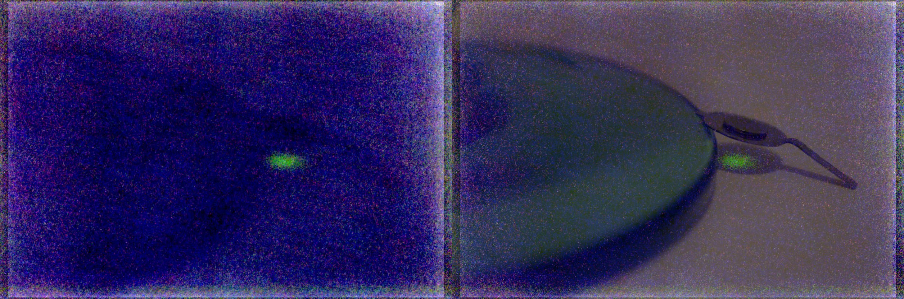

From when I was a little kid I always wanted to take x-ray pictures. Now I have a way to realise this dream. As a first step I bought an RTG cassette with intensifying screen inside. To check if what I was looking at really was an intensifying screen I had to test it somehow. I came up with fun way to do this :). I placed the americium extracted from a smoke alarm on saied screen with a vase made out of uranium glass. The glass was way to week to produce visible response on the screen however the americium showed a clear response!
These photos show a stack of 3 photos with 7 min exposure (left) and one with a reference light photo (right). This clearly shows the color of the intensifying screen and confirm that it works :)
How it sounds under a Geiger Miller counter (I turned on a power supply for ambient):
~background
~uranium glass vase
~americium
Note that americium is only 2mm diameter thin coated disc D: